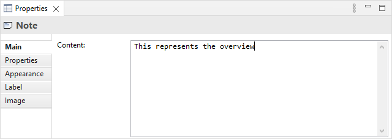
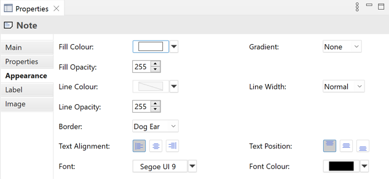
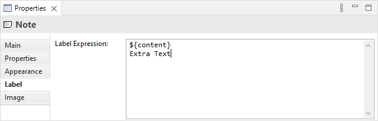
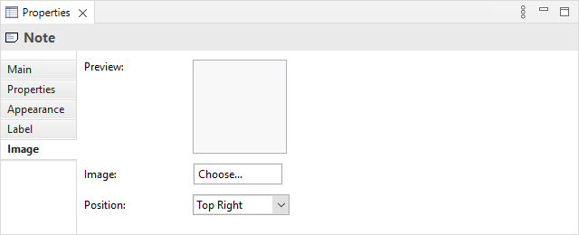

在视图中选择备注意味着您可以在属性窗口中编辑或查看以下属性。
主标签页
编辑备注的“主”属性
| 内容: | 备注的文本内容 |
属性标签页
有关创建和管理用户属性的更多信息,请参阅用户属性。
外观标签页
编辑备注的“外观”属性
| 填充颜色: | 设置所选对象的填充颜色。“默认”按钮将填充颜色设置为默认设置。 |
| 渐变: | 设置用于绘制所选元素的渐变填充的方向。设置为“无”、“顶部”、“左”、“右”和“底部”。注意 - 当图表以SVG图像格式导出时,渐变不会显示。 |
| 填充不透明度: | 设置数字的填充不透明度。范围从0-255。 |
| 线条颜色: | >设置用于绘制所选元素的线条颜色。“从填充颜色派生”下拉选项根据填充颜色设置线条颜色。 “默认”下拉选项将线条颜色设置为首选项中设置的默认颜色。 如果未显示“默认”下拉选项,则是因为线条颜色是从元素的填充颜色派生的,如“从填充颜色派生”下拉选项中设置的那样。 |
| 线宽: | 设置用于绘制所选对象的线条宽度。选项为“正常”、“中等”和“粗”。 |
| 线条不透明度: | 设置数字的线条不透明度。范围从0-255。 |
| 边框: | 设置边框类型。可以是“狗耳”、“矩形”或“无”。 |
| 文本对齐: | 将所选对象中的文本对齐到左侧、居中或右侧。 |
| 文本位置: | 将所选对象中的文本对齐到顶部、中间或底部。 |
| 字体: | 设置所选对象中文本的字体。 “默认”按钮将字体设置为首选项中设置的默认设置。 |
| 字体颜色: | 设置所选对象中文本的字体颜色。 “默认”按钮将字体颜色设置为默认设置。 |
标签标签页
添加标签表达式以在视图中显示
默认情况下,备注的文本内容将显示在其出现的视图中。使用标签表达式,您可以选择为备注显示的内容。例如,您可能希望显示备注的内容以及一个或多个属性。
有关表达式类型的完整列表,请参阅Archi Wiki。
图像标签页
备注的图像属性
| 预览: | 显示图像外观的预览图像。双击预览框将启动图像选择器对话框窗口。您还可以从桌面将图像文件拖放到预览框上。 |
| 图像: | 为对象选择图像或清除图像。有关更多详细信息,请参阅“向对象添加图像” |
| 位置: | 设置图像相对于对象的位置。 |